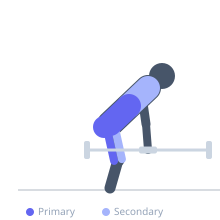
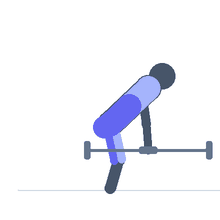

Exercise guide / Dumbbell Deadlift
Dumbbell Deadlift
The dumbbell deadlift replicates the conventional deadlift pattern using two dumbbells instead of a barbell. Each dumbbell hangs at the sides of the thighs, allowing for a more neutral wrist position and a slightly narrower stance. It is an excellent entry point for learning the deadlift pattern, training at home without a barbell, or adding variety to posterior-chain programming.
Primary muscles
erector spinae
gluteus maximus
hamstrings
Secondary muscles
quadriceps
trapezius upper
Stabilizers
latissimus dorsi
transverse abdominis
Equipment
Dumbbell (Fixed)


Starting position
- Place two dumbbells on the floor at the sides of the feet. Stand with feet hip-width apart, toes pointing forward. Hinge at the hips and bend the knees to grip the dumbbells with palms facing the thighs.
Setup
- Because each dumbbell is narrower than a barbell plate, you can stand in a narrower stance and the weight travels through a fuller range of motion if standing on a slight elevation.
Steps
- Step 1: Grip both dumbbells, ensuring a neutral spine and chest up.
- Step 2: Brace the core and maintain lat engagement throughout.
- Step 3: Drive through the floor, extending the hips and knees simultaneously.
- Step 4: At lockout, stand fully erect with hips forward and shoulders back.
- Step 5: Hinge back to lower the dumbbells under full control to the floor.
Coaching cues
- Keep dumbbells close — drag them up the legs
- Drive the floor away
- Hips and shoulders rise together
Breathing
- Brace before each rep. Exhale as you stand up.
Range of motion
- Floor to full lockout. Full hip and knee extension at the top.
Tempo
- 2-0-2-0
Common mistakes
- Rounding the lower back at the start position
- Letting the dumbbells drift forward away from the body
- Not achieving full hip extension at lockout
Safety
- If using large-diameter dumbbells, the range of motion will be limited — use a step or platform to restore full ROM
- Ensure a neutral spine before initiating the pull
Training
- strength: 5–10 reps
- hypertrophy: 10–15 reps
- strength: 3–4 sets
- hypertrophy: 3–4 sets
- Rest: {'strength': 150, 'hypertrophy': 90}